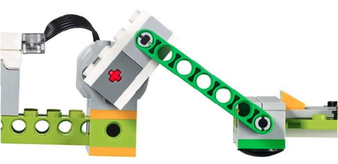
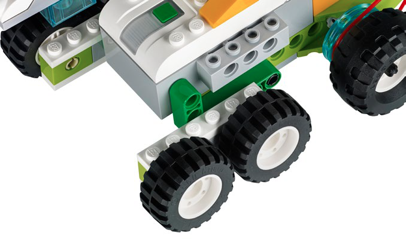
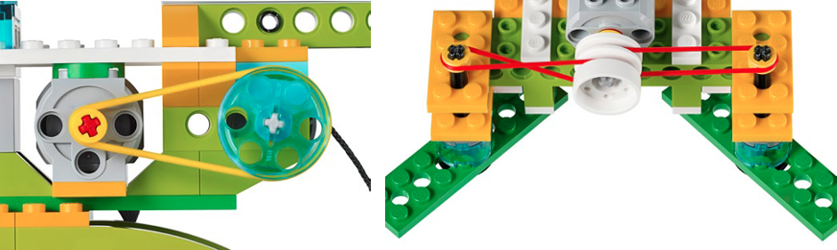
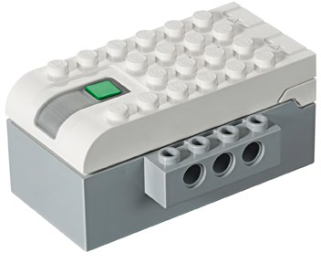
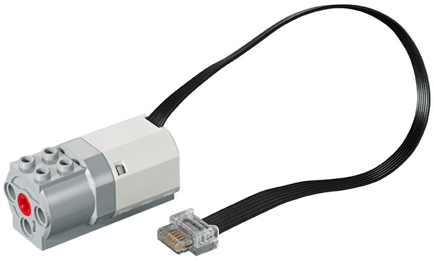
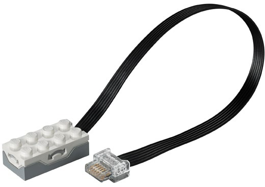
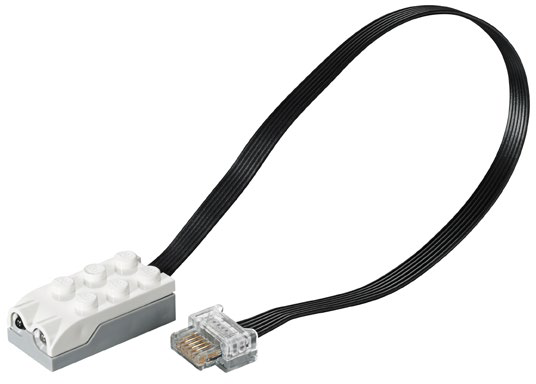

WeDo 2.0 搭建
（Building）
schedule60+ 分钟
stars初级
face1-2 年级
一. 齿轮（Gear）

- 【什么是齿轮？】齿轮是一个有齿的圆盘，与其他部件齿合后，可连续传递动力给其他部件，使其他部件移动。
- 【什么是齿轮传动链？】多个齿轮相互啮合传动，形成“齿轮传动链”。
- 【生活中的齿轮】如自行车齿轮，与自行车链条齿合，把脚踏旋转齿轮的力传递给自行车后轮齿轮，使自行车轮滚动。
- 【加速齿轮】大齿轮驱动小齿轮，产生较大的旋转动力。
- 【减速齿轮】小齿轮驱动大齿轮，产生较小的旋转动力。
- 【齿轮的应用】行走、旋转、转向。
二. 锥齿轮（Gear）

- 【什么是锥齿轮？】锥齿轮带有尖角，它可以垂直啮合于另一个齿轮，改变轴心的旋转。
- 【锥齿轮的应用】左右摇摆、摇摆、推动、转向。
三. 齿轮条（Rack）
- 【什么是齿轮条？】齿轮条是一个“齿条”与“圆形齿轮”组合在一起的平面部件。
- 【齿轮条的作用】变齿轮的旋转方式为直线运动方式。
- 【齿轮条的应用】推动
四. 螺旋齿轮（Worm Gear）

- 【什么是螺旋齿轮？】螺旋齿轮看似像螺丝，可以与齿轮啮合。螺旋齿轮是为了驱动普通齿轮而设计的，但齿轮不可以推动螺旋齿轮，这也是刹车的原理。
- 【螺旋齿轮的应用】侧转。
五. 支杆（Beam）

- 【什么是支杆？】支杆连接于旋转部分，成为一个活塞。活塞是机器的一个运动部件，可将马达产生的能量转变成“向上/向下”或“向前/向后”的运动力。活塞可以推、拉或驱动同台机器上的其他部件.
- 【支杆的应用】曲柄。
六. 轮胎（Wheels）

- 【什么是轮胎？】一个通过“旋转轴”制造推进动力的圆形组件。。
- 【轮胎的应用】摇摆、直线行驶、行驶。
七. 滑轮（Pulley）

- 【什么是滑轮？】滑轮带有槽，可使皮带嵌于其中。皮带就像一根橡皮筋，连接着模型的另一个部分，使其可以转动，并将转动状态传送到模的另一部分。
- 【加速滑轮】一个大滑轮带动小滑轮，可使小滑轮产生更多的旋转动作。
- 【减速滑轮】一个小滑轮带动大滑轮，可使大滑轮产生更少的旋转动作。
- 【交叉滑轮】用于构成相互平行但以反方向旋转的两个轴。
- 【滑轮的应用】行驶、卷绕、举起、抓取、推动、侧转、清扫。
- 【滑轮特点】由于皮带会带动滑轮滑动，所以当模型遇到阻力时，在机械上使用滑轮就可以避免模型受到损坏。
八. 智能集线器（Smarthub）

- 【什么是智能集线器？】一个电子部件，一边通过无线蓝牙连接编程电脑，另一边通过有线电缆连接其他电子部件（如电机），当智能集线器接收到编程电脑传递过来的程序指令后，按照指令指挥其他电子部件运行（如让电机正转），从而使模型动作，以完成某种特定任务。
- 【外观】2 个连接传感器或电机的连接口，1 个 LED 灯，1 个开关。
- 【使用能源】电能，使用 3 节 5 号电池（AA）或充电电池。
- 【LED 灯的状态指示】闪烁白灯：等待连接蓝牙。蓝灯：蓝牙连接完毕。闪烁橘色灯：提供给马达的动力达到极限。
- 【连接编程电脑】按下智能集线器上的绿色开关（即打开蓝牙连接功能），在编程电脑的 WeDo 2 编程软件中会自动搜索到智能集线器，点击智能集线器的名称发起连接，连接成功即可开始编程。
九. 中型电机（Medium Motor）

- 【什么是中型电机？】一个电子部件，可以把电能转换为机械能，使轴旋转。电机可以向两个方向旋转，可以停止，可以设定在特定的时间（精确到秒）内运行，也可以调节不同的轴旋转速度。
十. 倾斜传感器（Tilt Sensor）

- 【什么是倾斜传感器？】一个电子部件，能够感受到自身倾斜的方向，并转换成倾斜方向信号传递给智能集线器，智能集线器收到信号后可执行其他指令。
- 【倾斜方向信号类别】向左倾斜、向右倾斜、向上倾斜、向下倾斜、没有倾斜、震动。
十一. 运动传感器（Motion Sensor）

- 【什么是运动传感器？】一个电子部件，在一定的距离内，能够感受到其他物体的运动变化，并转换成运动变化信号传递给智能集线器，智能集线器收到信号后可执行其他指令。
- 【运动变化信号类别】物体接近、物体远离、物体改变位置。
十二. 建构组件（Gear）
- 【什么是锥齿轮？】锥齿轮带有尖角，它可以垂直啮合于另一个齿轮，改变轴心的旋转。
- 【锥齿轮在 WeDo 2.0 中的应用】左右摇摆、摇摆、推动、转向。
十三. 连接组件（Gear）
- 【什么是锥齿轮？】锥齿轮带有尖角，它可以垂直啮合于另一个齿轮，改变轴心的旋转。
- 【锥齿轮在 WeDo 2.0 中的应用】左右摇摆、摇摆、推动、转向。
十四. 移动组件（Gear）
- 【什么是锥齿轮？】锥齿轮带有尖角，它可以垂直啮合于另一个齿轮，改变轴心的旋转。
- 【锥齿轮在 WeDo 2.0 中的应用】左右摇摆、摇摆、推动、转向。
十五. 装饰组件（Gear）
- 【什么是锥齿轮？】锥齿轮带有尖角，它可以垂直啮合于另一个齿轮，改变轴心的旋转。
- 【锥齿轮在 WeDo 2.0 中的应用】左右摇摆、摇摆、推动、转向。
十六. 拆卸工具（Gear）
- 【什么是锥齿轮？】锥齿轮带有尖角，它可以垂直啮合于另一个齿轮，改变轴心的旋转。
- 【锥齿轮在 WeDo 2.0 中的应用】左右摇摆、摇摆、推动、转向。